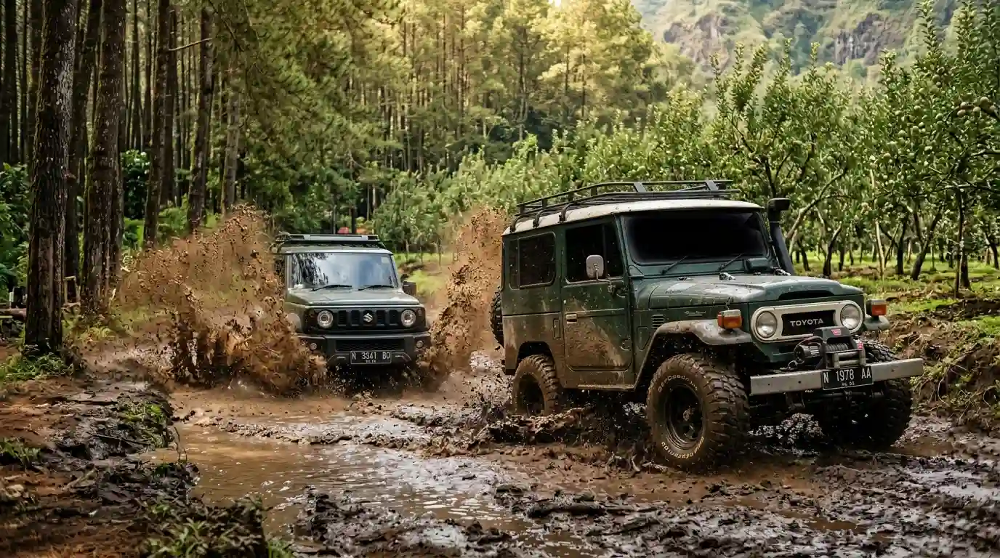

1 hari (6–8 jam)Paket Fun Offroad Track
Trip sehari penuh terobos kebun apel, sungai dangkal, dan hutan pinus Batu.
- Jeep 4x4 + sopir + BBM penuh
- Snack & makan siang prasmanan/box
- Tiket masuk semua kawasan wisata
- Foto & video dokumentasi kegiatan
Mulai dari
Detail PaketRp 350.000 / pax